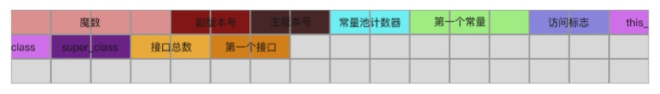
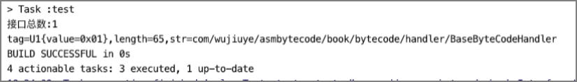

解析接口表

在class文件中，继this_class与super_class之后，存储的就是该class实现的接口总数以及该class实现的所有接口。
假设，某个class实现的接口总数为1，则接口表需要占用两个字节，用于存储描述该接口的CONSTANT_Class_info常量在常量池中的索引，如下所示。

接口解析器InterfacesHandler的实现代码如下。
public class InterfacesHandler implements BaseByteCodeHandler {
@Override
public int order() {
return 5;
}
@Override
public void read(ByteBuffer codeBuf, ClassFile classFile) throws Exception {
// 1）
classFile.setInterfaces_count(new U2(codeBuf.get(), codeBuf.get()));
int interfaces_count = classFile.getInterfaces_count().toInt();
U2[] interfaces = new U2[interfaces_count];
classFile.setInterfaces(interfaces);
// 2）
for (int i = 0; i < interfaces_count; i++) {
interfaces[i] = new U2(codeBuf.get(), codeBuf.get());
}
}
}
- 1）、先获取接口总数interfaces_count，根据interfaces_count创建接口表interfaces[]；
- 2）、根据接口总数按顺序读取接口，接口表中的每项都是一个常量索引，指向常量池表中的CONSTANT_Class_info结构的常量。
接着我们将解析器注册到ClassFileAnalysiser，然后编写单元测试。
由于接口表中的每一项都是指向常量池表中CONSTANT_Class_info常量的引用，因此，我们可以在单元测试中，根据CONSTANT_Class_info的name_index获取到对应的CONSTANT_Utf8_info常量，拿到接口的类型名称。单元测试代码如下。
public class InterfacesHandlerTest {
@Test
public void testInterfacesHandlerHandler() throws Exception {
ByteBuffer codeBuf = ClassFileAnalysisMain.readFile("InterfacesHandler.class");
ClassFile classFile = ClassFileAnalysiser.analysis(codeBuf);
System.out.println("接口总数:" + classFile.getInterfaces_count().toInt());
if (classFile.getInterfaces_count().toInt() == 0) {
return;
}
U2[] interfaces = classFile.getInterfaces();
// 遍历接口表
for (U2 interfacesIndex : interfaces) {
// 根据索引从常量池中取得一个CONSTANT_Class_info常量
CONSTANT_Class_info interfaces_class_info =
(CONSTANT_Class_info) classFile.getConstant_pool()
[interfacesIndex.toInt() - 1];
// 根据CONSTANT_Class_info的name_index从常量池取得一个
// CONSTANT_Utf8_info常量
CONSTANT_Utf8_info interfaces_class_name_info =
(CONSTANT_Utf8_info) classFile.getConstant_pool()
[interfaces_class_info.getName_index().toInt() - 1];
System.out.println(interfaces_class_name_info);
}
}
}
单元测试结果如下。

从结果可以看出，该class文件实现的接口总数为1，实现的接口为BaseByteCodeHandler。
发布于：2021 年 07 月 24 日
作者: 吴就业
链接: https://wujiuye.gitbook.io/jvmbytecode
来源: GitBook开源电子书《深入浅出JVM字节码》（《Java虚拟机字节码从入门到实战》的第二版），未经作者许可，禁止转载!